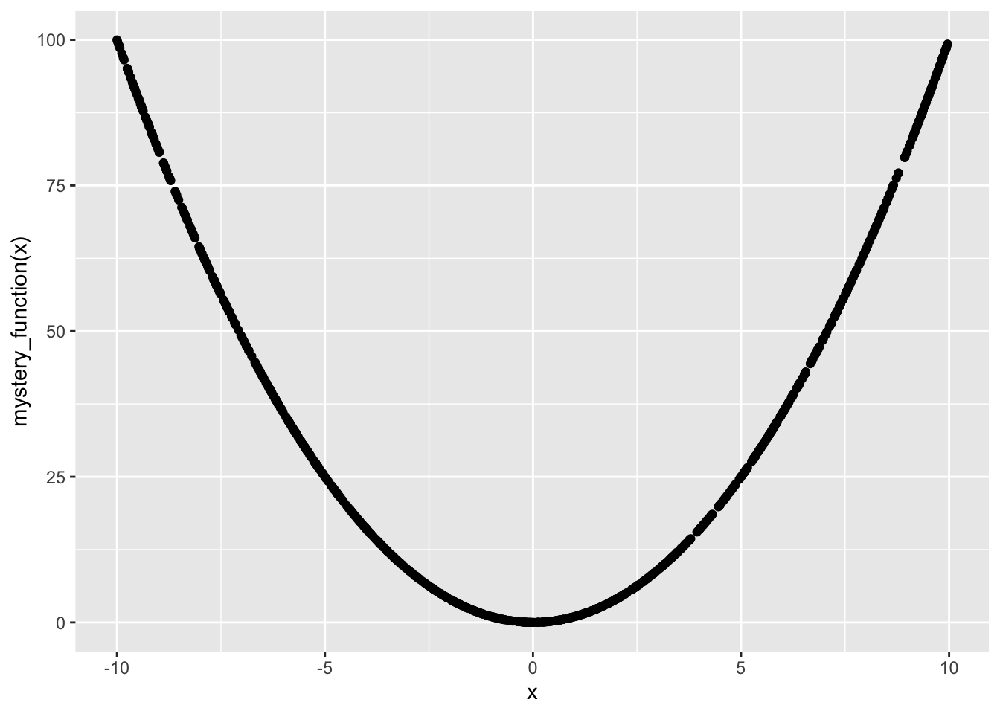

print("Good Morning! 🤗")[1] "Good Morning! 🤗"print("Good Morning! 🤗")[1] "Good Morning! 🤗"This document you are reading now is called a Quarto book. We will talk more about Quarto later, but for now, all you need to know about Quarto books is that they:
are relatively simple to construct,
can contain R code snippets and their outputs,
are pretty enough for me to be temporarily satisfied.
This book let’s me put many of my least relevant tangents in these collapsible little notes.
The features of this book, which are achieved easily through Quarto, explain its format. Code snippets appear in this book, but only if you want them to. Each code snippet is collapsible by clicking the triangle next to “show code for this result”. If you really hate code, you can click the “</> Code” button on the top of each page and hide (or show) all the code at once. Speaking of the “</> Code” button, if you click “View Source” you can see all of the code that was used to create the page.
Quarto also lets me show you “paged tables.” In the following code, I generate 1000 random numbers between -10 and 10, which I label x. Then, I apply the mystery_function to each number, producing y. What does mystery_function do?
Quarto also let’s me show you plots, like the one below. What do you think mystery_function does now?

In reality, mystery_function just squares x, so:
\[ \mathtt{mystery\_function}(x) = x^2 \tag{1}\]
All of the chunks of code have line numbers. For any chunk, a little clipboard appears when you hover over the code listing, and you can copy it by clicking on the clipboard. (This includes the code in the “View Source” pane, meaning you can copy the entire page, text and all.)
Quarto also processes citations, so I can, for example, easily direct you towards my two fathers: Turing (1936) and Foucault (1978). It will also process internal links so that I can, for example, send you back to the top of the page: Listing 1.
Finally, Quarto allows me to annotate code, which is helpful to explain how it works when a high-level of technical detail is needed. For an example of those annotations and when they might be helpful, look to Figure 2.1.
R is an free and open-source statistical programming language.You use R by typing commands into an R console, which looks like this:

RStudio is a graphical user interface (GUI) and interactive development environment (IDE) with which to use R. This means that RStudio contains an R console (lower left) and a variety of other tools (right), like a text editor (upper left). RStudio looks like this:

Tidyverse is a collection of R packages that are designed to work well together and to acomplish data analysis tasks. The Tidyverse packages were developed by Hadley Wickham primarily, but also by teams of his collaborators.
Because Tidyverse is set of R pacakges, there is not picture to provide. Tidyverse exists as R functions that you can (and will) use in your code.
The grammar of graphics refers to another set of R packages, exemplified by ggplot2, which is included in the tidyverse. The grammar of graphics is the tool that most R programmers use to produce the “production-quality graphics” for which R is known. Once you begin to produce plots with ggplot2, you are likely recognize that you have been seeing these plots for years.
I believe that these tools will allow you to accomplish the vast majority of data analysis tasks, and that knowing how to use them will result in you understanding data analysis on a deeper level and being able to do it faster. That being said, these are not the only tools for data analysis. I encourage you to explore others, as well; particularly, if you intend to do a lot of work with text data, I would suggest python.
Because my audience does not intend to become “programmers,” per se, I would also like to introduce you to the following tools, which allow R code to be integrated into readable documents instead of writing R code in separate text files with R code only (called scripts). R scripts have a place, to be clear, especially while you are learning. However, if you would like to share the analysis that you do with an R script, sharing that R script is not a good way to do that. When you send someone an R script, you are sending them a bunch of code, not an analysis
The current gold standard for the sort of work you are most likely to want to produce (reproducible research) is this - the document you are reading now. This is a document which includes code, the output of that code, and text explaining that code and providing context. This approach is called literate programming. The tools used to produce literate programming documents with R are:
RMarkdown: a document preparation software based on R and a markup language called markdown that is mainly used to make static documents (like appendices to a journal article). RMarkdown uses a software called pandoc to turn the .rmd file into: a pdf (latex or a beamer presentation), a .html website, a word document, a power-point, and a lot of other formats you’re likely to never use.
Quarto: a very similar, but more advanced and comprehensive software than RMarkdown. Most of the things you can do in Quarto are also possible in RMarkdown, like adding cross references (like this Equation 1), creating books (also like this), creating interactive data dashboards (which seems particularly trendy as of late), and creating blogs and websites. Quarto is made by the same company that makes RStudio.
Shiny: a software (written in R) that allows you to create interactive plots, which may be helpful if you are, say, trying to decide the optimal number of bins in a histogram. You could use shiny to create a histogram and a bins slider, so that you could easily see a variety of different bin sizes merely by moving a slider (instead of by writing, modifying, and rewriting code to achieve the same end).
My goal for you is to write code that is readable and to put that code inside documents that are actively fun and/or interesting to read. (That’s also, incidentally, my goal for me.)
We are also going to do statistics! There are two approaches to statistics that we’re going to adopt through these lessons, so I’d like to begin by elucidating the way in which these approaches are different. I am more familiar with the first approach (exploratory data analysis). Confirmatory data analysis uses many of the same tools (like hypothesis testing, which I will show you), but it uses them in a different and moer complicated way. The ultimate goal of both approaches is to predict the result of measurements.
exploratory data analysis: If the purpose of a statistical model is to predict data, then a model that makes the most accurate prediction is the best model. The model creation process is iterative. Once you see the results of a model, you can use the results to modify the model itself. Generally, practitioners recognize that there are a variety of different types of models that could be used for any task. Thus, they usually construct a variety of different models and then compare them to select a final model. Practitioners will use numbers (in diagnostic and statistic tables) or visuals (like a residuals plot) when comparing models.
confirmatory data analysis: In the best case, at least according to the “Open science” framework, the final statistical model will have been selected and preregistered before data is even collected. Statistics have to be rigorous to mean anything, a fact which the machine learning people (who do only exploratory work) ignore. They don’t check model assumptions using statistical tests like the Shapiro-Wilk normality test, and they are constantly “p-hacking” and “HARKing” to forcibly extract findings from their data. Confirmatory data analysis rejects these practices, aiming instead for statistical models that are pre-specified (pre-registered), theoretically-based, and rigorous (whatever they take that to mean).
I’m often somewhat flippant about the second approach, which suggest and attempts to discover Truth where I am skeptical it exists. In any case, the second approach is the only one that is taught in statistics courses. This is a mistake. Firstly, exploratory data analysis is much more commond. Secondly, it is easier to get started doing exploratory (rather than confirmatory) data analysis. Because both of these approaches adopt many of the same tools, it seems to me that starting with exploratory data analysis and trying to make that make sense is the most effective way to learn confirmatory data analysis (which will require additional effort and research that I can’t provide).
Thus, I intend to provide you with a strong understanding of data that you can directly apply to exploratory data analysis tasks. My hope is that this understanding will enable you to complete a diversity of tasks, including confirmatory data analysis, if that is of interest.
There has to be some boring stuff because pedagogy. I have quite a few learning objectives for you, forming one big list, but I’ll attempt to section them off so they are easier to read.
discuss R as a language with a history: use knowledge about the history of R (and of scientific computing more generally) to describe what R is, what people “say” in this language, and why this language has the properties and characteristics that it does.
R competence: read R expressions written by others (allowing the language to serve a communicative purpose), and write R expressions that are readable and align with best practices within the open source R community.
R’s friends: Describe R’s relationship to RStudio, RMarkdown, Shiny, Quarto, and Tidyverse; and, describe what each of these tools is and why someone would use them.
describe R’s data types and the use of each: strings, numerics (floating point “doubles”, integers, and complex numbers), logicals, datetimes, and factors
describe R’s data structures and the use of each: including, vectors (1-dimensional arrays), matrices (2-dimensional arrays), arrays (more than 2-dimensional arrays), lists (key-value pairs), data frames, and tibbles
access R documentation, and read it effectively enough to solve a problem
generate synthetic data: use simulation of simple events (like the rolling of dice or flipping of a coin) to gain visual intuition for the central limit theorem and the law of large numbers
use the Monte Carlo simulation framework to evaluate statistical tests (e.g., by determining what happens when assumptions are violated)
process string data: convert strings to all upper or lower case, add prefixes or suffixes, splitting strings apart
process numeric data: scale and center numeric data and write functions to accomplish non-standard transformations
process language data: apply the principles of natural language processing to pre-process text data (by tokenizing and stemming text and describing both of those processes and why they are used)
null hypothesis significance testing: use R to perform null-hypothesis significance tests, such as the one-sample, two-sample, and repeated measures t-test
regression: use R to perform linear and logistic regressions, including regressions with polynomial terms
machine learning: use R to perform a more complicated machine learning task, likely by constructing a decision tree and a random forest classification model
dimensionality reduction: perform principal component analysis and construct a latent semantic space, and explain why these two seemingly distinct methods are connected by singular value decomposition
rectangular data: use the tidy data framework to read, write, and pre-process rectangular data in a consistent, efficient, and minimally complex manner.
import data from a variety of sources including: comma-separated values (.csv) files, excel spreadshees (.xlsx files), google sheets spreadsheets
‘tidy’ data into the following format: one observation per row, one variable per column, one value per cell
use available tools that enable you to store data in a very consistent format with very little effort
language data: use R to pre-process, analyze and visualize text data
visualization: use R and the grammar of graphics (represented by ggplot2 and related packages) to visualize data and to share data visualizations with others
publication: use RMarkdown or Quarto to conduct a linear or logistic regression, and to report and interpret the results of those tests